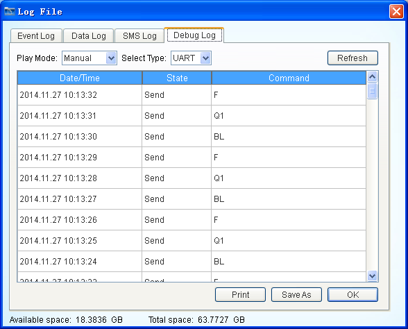

- Event logging UPS occurring events by month selection.
-

Figure 1£ºEvent Log
- According to setting options to save time intervals, UPS saved data, including voltage, current, frequency, load percentage, and so on.
-

Figure 2£ºData Log
- When enabled messaging, sending the case records recorded messages.
-
Figure 3£ºSMS Log
- The UPS connected to the serial interface real-time recording, USB, serial connection, real-time messaging communications data, ease of use when the factory feedback problems.
-
 Figure 4£ºDebug Log
Note1: If no artificial Clear History, in order to ensure the traceability of data, software does not clear the record on their own, when the software remind disk space is less than 10%, the clear need to clear their own records, and properly preserved.
Note2: Clear log records including the removal of a month ago, three months ago, six months ago, a year ago, and all the records. Select the time period is a natural time for such records to clear a month ago, that clears all records outside of the current month.